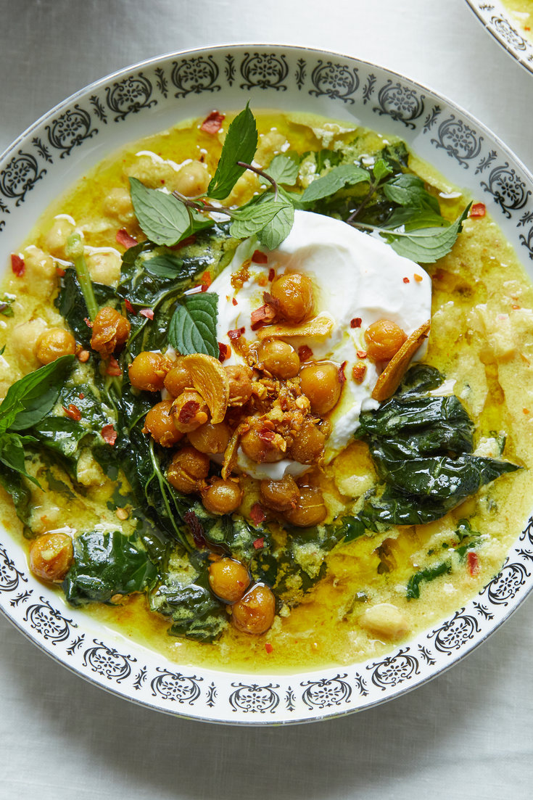

Fried Chickpeas in Coconut Milk

Chickpeas are fried to a golden crunch with garlic, onions, ginger and spices before being simmered with coconut milk and greens
Ingredients
- 1 can chickpeas
- 1 tablespoon vegetable oil
- 2 cloves garlic
- 1 white onion
- 1 tablespoon diced ginger
- 1 tablespoon turmeric
- 2 teaspoons berebere spice mix
- 1 can coconut milk
- 1 tablespoon tomato paste
- 1 cup vegetable broth
- Greens, such as kale, or mustard or collared greens
Recipe
- Heat oil in a cast iron skillet until glossy
- Add garlic, onion, and ginger and saute fro 30 seconds
- Add chickpeas and continue frying until chickpeas start to darken and develop a crunchy exterior
- Stir in turmeric and berebere and continue to saute for 30 seconds
- Add coconut milk, tomato paste, greens, and broth and simmer for 15 minutes, until sauce begins to thicken and chickpeas are soft
- Serve with rice or couscous